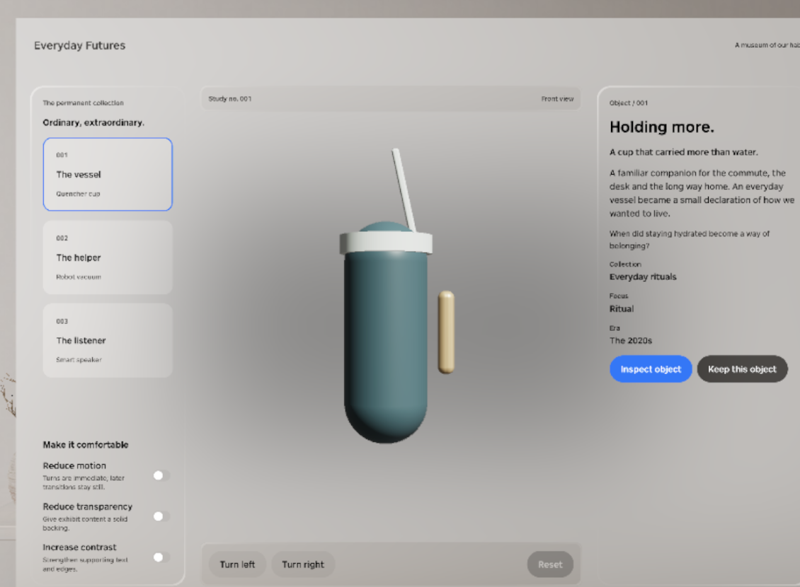
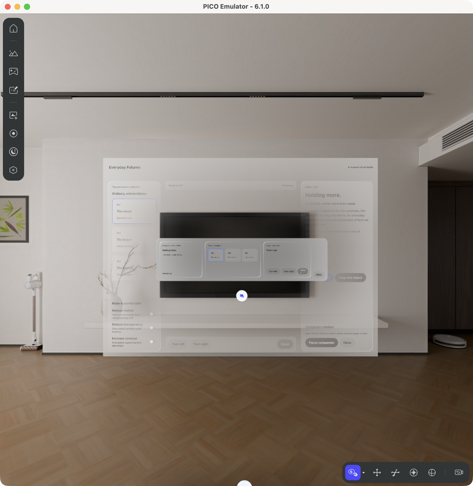
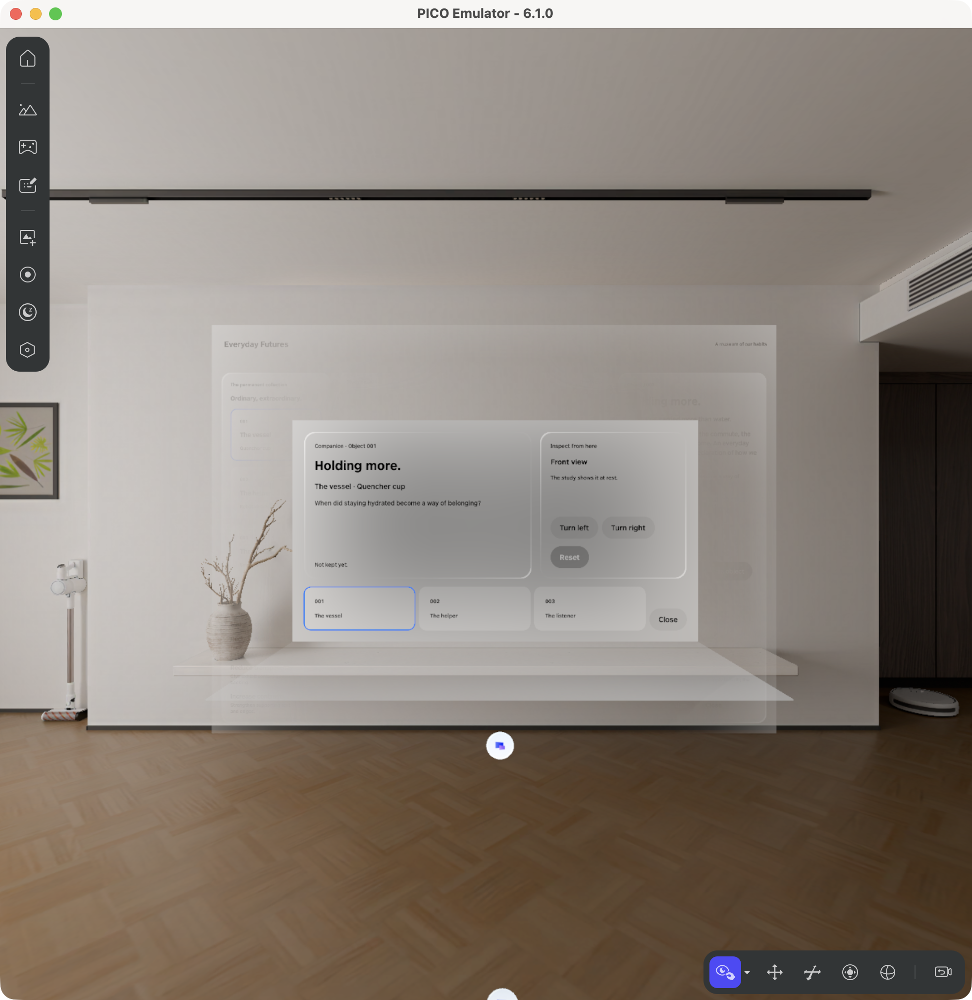
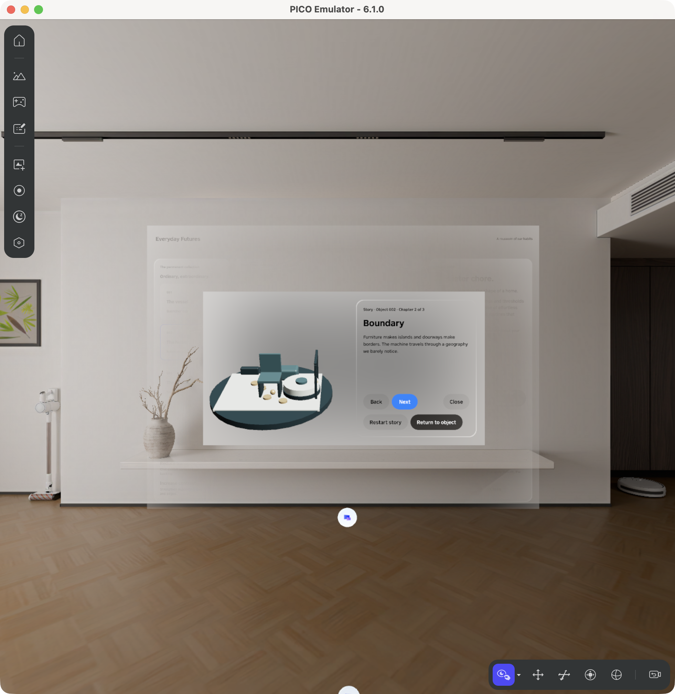
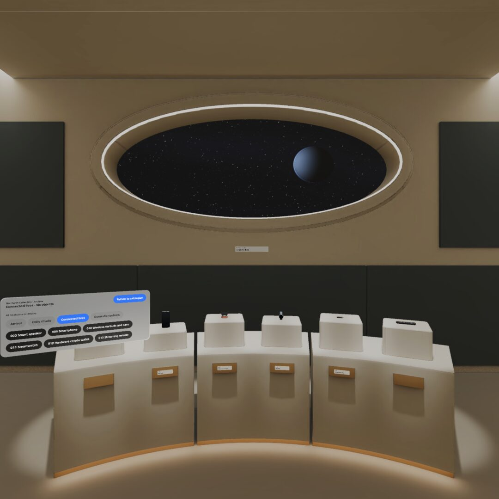
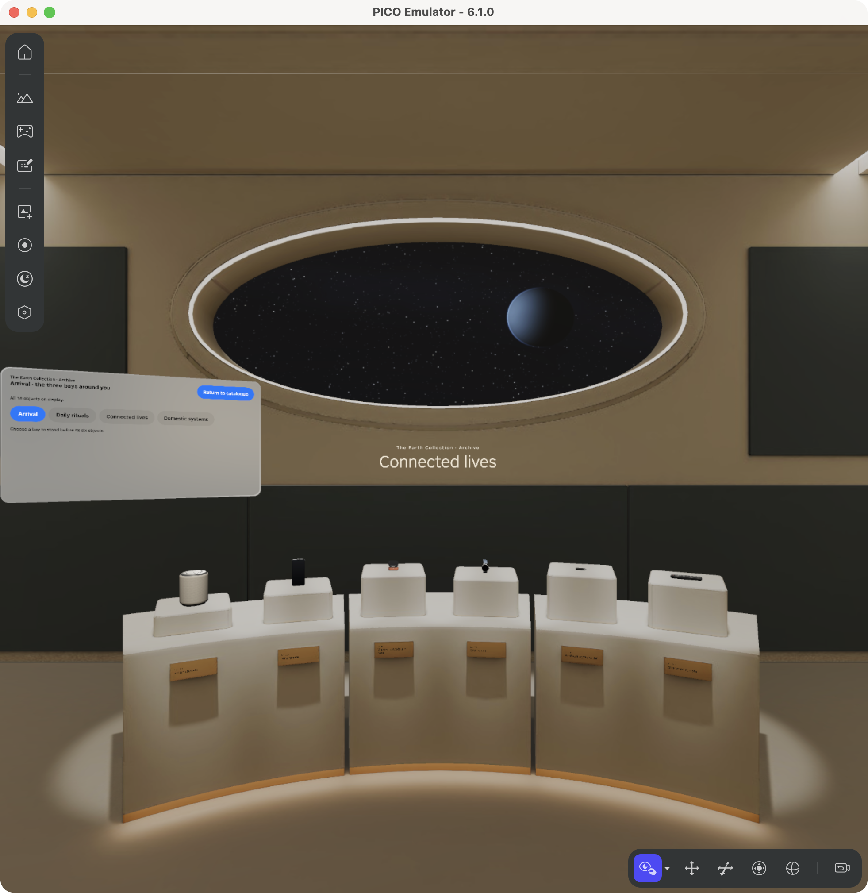

01 / An evolving museum
One product grows from catalogue and adjacent 3D study, to shared windows, to three miniature stories, then eighteen exhibits and an immersive archive. Agentic describes authoring: no runtime LLM is required.
Speaker notes
Speak for 35 seconds. Introduce the five-lesson course and the distinction between generated output, build output, admitted frames, and human or agent inspection.
02 / Catalogue → study → reset


The selected vessel, its interpretation and adjacent procedural model share one screen. Reset returns the study to its front view. This is the original procedural vessel, before the Tripo replacement.
Speaker notes
Speak for 40 seconds. Read the card, identify the model and Reset state, and distinguish one observed Reset from an untested input route.
03 / A generated layout can still fail


The companion exists, but its strip is too small for readable captions. Passing a rendering gate did not make this composition acceptable.
Speaker notes
Speak for 40 seconds. Point to the small strip. Explain the brief → generated implementation → opened evidence → focused repair sequence. The prompt is reconstructed from the placement finding.
04 / Repair, then inspect the result


The larger two-row companion exposes readable details, cards and rotation controls. Closing and reopening preserves the object selected while it was closed.
Speaker notes
Speak for 40 seconds. Compare with the preceding panel. A learner transfer task is to add one shared preference, then explain why each window must observe the same state.
05 / Stories preserve return context


Boundary is the robot vacuum’s second chapter. Vessel, vacuum and speaker each have a three-chapter miniature. Only these three original objects have stories.
Speaker notes
Speak for 40 seconds. Show Next and Return to object. Explain that Return preserves the visitor’s latest study selection and orientation, including a Reset performed during the story.
06 / Blender room: an earlier iteration


The Connected lives bay already holds six original objects, but its wall title is tiny. This is an existing cropped/resized JPEG from an earlier build.
Speaker notes
Speak for 25 seconds. Identify the six models and the tiny wall label. This image is a nongate look, not a newly admitted capture.
07 / The archive becomes readable


The Connected lives bay has larger wall lettering and an explicit Return to catalogue. Its six depicted exhibits and the room were authored for the project.
Speaker notes
Speak for 40 seconds. Explain the archive’s loading and return lifecycle. A counter of created entities is not proof of released native allocations.
08 / Independent inspection and bounded repair
Open in 3D creates an independent object window with Turn, Spin/Pause and Reset. Opening a companion replaces the inspector. Reduce motion stops spin. The source defines one auxiliary-window policy.
Speaker notes
Speak for 35 seconds. Distinguish code, retained interaction results and stills. Inspector captures with reference/generated thumbnails are held; this panel is an editorial explanation, not a fabricated product image.
09 / What the final build establishes
Source c65959f; APK b1a61d99…; retained 128 passing app tests. Final visitor-start gate museum-dh-01-b8-visitor-start passed 17 checks once. Its inspected original image and the APK are not in this repository; ASSET_SUPPLEMENT.md explains how they are supplied separately, with their rights qualifications.
Speaker notes
Speak for 25 seconds. Request curriculum and technical feedback. Leave recipient timing, supported teaching versions and item-specific asset eligibility as explicit review questions; no date or extension is agreed.